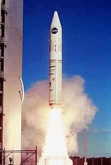

Le Pacific Spaceport Complex – Alaska (PSCA), anciennement Kodiak Launch Complex (KLC)
jusqu'en 2016, est une base de lancement à but commercial et militaire situé sur l'île Kodiak, une île côtière du sud de l'Alaska, gérée par la Corporation Aérospatiale d'Alaska. Inaugurée en 1998.
la base est utilisée par différents clients pour mener diverses missions à l'aide de missiles, fusées-
sondes ou lanceurs orbitaux. La base étant idéalement placée pour atteindre des orbites
polaires, plusieurs vols ont été effectués avec des satellites à bord. En 2018, la compagnie Astra
Space a réalisé le premier vol commercial suborbital de la base, et réussit en 2021 son premier
vol orbital commercial à l'aide son lanceur Rocket 3. de son écosystème, qui se nourrissait
Histoire de la base :
La construction de la base spatiale a ainsi débuté en janvier 1998 par des installations plutôt
sommaires, qui seront améliorées par la suite, le premier lancement de cette base a lieu le 6
novembre 1998 le tout sur des installations temporaires. Ce premier vol est réalisé pour le
compte de l'US Air Force avec une fusée à configuration unique dénommée Ait-1.
Le 15 septembre 1999, le deuxième vol depuis la base est effectué, avec une autre fusée à
configuration unique, dénommée Ait-2. Ces deux premiers lancements contenaient divers objets,
mais pas des humains.
En 2001, le premier vol orbital est effectué depuis la base grâce à une Athena I, qui décolle pour
une mission de la NASA dénommée "Kodiak Star" (Étoile de Kodiak), en emportant plusieurs
satellites étudiants à but scientifique en orbite basse.
L'Alaska Aerospace Development Corporation a conclu en septembre 2008 un contrat de 50
millions de dollars avec la Missile Defense Agency
pour procéder à des lancements et fournir un
soutien logistique.
En 2014, un échec de lancement d'une arme hypersonique a endommagé la tour de service, les
installations s'occupant de la charge utile et divers autres bâtiments. À la suite de ces dégâts, la
Corporation Aérospatiale d'Alaska a prévu de réparer et de moderniser toutes les installations,
notamment dans le but d'accueillir des lanceurs plus puissants. Néanmoins, le gouverneur de
l'Alaska Bill Walker a décidé de stopper les travaux en décembre 2014, en raison du passage
d'une ordonnance visant à remédier à un déficit du budget de l'état d'Alaska. En effet, les
réparations ont été financées à hauteur de 26 à 29 millions de dollars américains. Une fois ces
travaux repris, la base de lancement fut officiellement renommée "Pacific Spaceport Complex -
Alaska" le 14 avril 2015. La réouverture officielle de la base fut effectuée le 13 août 2016.
Après trois premières tentatives qui se soldent par des échecs, Astra réussit à placer sa fusée en
orbite pour la première fois le 20 novembre 2021, devenant également la première entreprise
privée à réussir un vol orbital depuis Kodiak7.
Caractéristiques et installations de la base :
La base de lancement de Kodiak s'étale sur un terrain rectangulaire de 15 km2 appartenant à
l'État d'Alaska, et est exploitée par la Corporation Aérospatiale d'Alaska, une entreprise
publique4. En 2005, ce site procurait directement 45 emplois à temps plein8. Le KLC a été
construit pour un coût de 60 millions de dollars (fonds fédéraux et fonds de l'État d'Alaska).
La partie haute de la base, appelée "Up-range", abrite le centre de contrôle météorologique et le
centre de contrôle de vol, d'où les lancements sont coordonnés. La salle principale peut accueillir
jusqu'à 120 personnes et est située à une distance sûre des zones de lancement. Des hangars
dédiés à la maintenance et à la réparation sont à proximité, ainsi qu'une zone radar et un
héliport à l'extrémité d'une courte piste goudronnée.
La zone "Mid-range" se situe quelques kilomètres plus bas. Elle est composée d'une station de
mesure météo, de plusieurs antennes appartenant à la LORAN, d'un héliport, d'une zone de
dépôt de matériaux, et surtout du bâtiment dans lequel la charge utile est préparée pour le vol,
et est mise sous coiffe. Les étages supérieurs fonctionnant avec des ergols stockables sont aussi
remplis ici.
Au sud de la base, la zone "Down-range" abrite les pas-de-tirs, notamment les complexes LP-1 et
LP-2. LP-1, destiné aux vols orbitaux, possède une tour d'assemblage de 53 mètres, la plus haute
de la base, offrant une protection contre les conditions météorologiques. Les portes de cette
tour se referment pendant la préparation du lancement. LP-2 est utilisé pour les campagnes
suborbitales. Les deux complexes partagent une tour de service mobile, et les lanceurs sont
assemblés près du LP-2, avec un hangar climatisé à quelques centaines de mètres pour stocker
les étages à poudre.
En 2010, la Corporation Aérospatiale d'Alaska a lancé le projet LP-3 pour des décollages rapides
de satellites, évoluant ensuite en quatre zones distinctes (LP-3A, 3B, 3C et 3D). Les LP-3A et 3D
sont des zones de gravier pour les fusées-sondes à ergols solides. Astra Space utilise le LP-3B
pour son lanceur Rocket 3 à ergols liquides. Le LP-3C permet le lancement de petites fusées à
ergols solides et liquides, potentiellement utilisés par Astra Space pour des fréquences accrues.